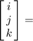

Advanced Dynamics HW.1
Programer: PO-HSUN WU Last edit date: 2021/10/17 ??:??
Contents
Define some value
clear;clc;close all syms R t omega OMEGA alpha beta real alpha = omega*t; % position angle of link 1 with respect to the fix frame(Inertial frame) beta = OMEGA*t; % position angle of link 2 with respect to the relative frame of link 1
Transformation matrices between different frame

latex \begin{math} \begin{bmatrix} i \\ j \\ k \end{bmatrix} \end{math} \latex
F2R = [ cos(alpha) sin(alpha) 0 % from fix frame to ratation frame -sin(alpha) cos(alpha) 0 0 0 1]; R2F = inv(F2R); % from rotation frame to fix frame
Position vector of the particle
r_R = [R*cos(beta) 0 R*sin(beta)]'; % in the rotating frame r_I = simplify(R2F*r_R); % in the fix frame
Velocity vector of the particle
v_I = (diff(r_I,t)); % in the fix frame v_R = simplify(F2R*v_I); % in the rotating frame fprintf('v_x1 = %s \n',char(v_R(1))) fprintf('v_y1 = %s \n',char(v_R(2))) fprintf('v_z1 = %s \n',char(v_R(3))) fprintf('\n')
v_x1 = -OMEGA*R*sin(OMEGA*t) v_y1 = R*omega*cos(OMEGA*t) v_z1 = OMEGA*R*cos(OMEGA*t)
Acceleration vector of the particle
a_I = diff(v_I,t); % in the fix frame a_R = simplify(F2R*a_I); % in the rotating frame fprintf('a_x1 = %s \n',char(a_R(1))) fprintf('a_y1 = %s \n',char(a_R(2))) fprintf('a_z1 = %s \n',char(a_R(3))) fprintf('\n')
a_x1 = -R*cos(OMEGA*t)*(OMEGA^2 + omega^2) a_y1 = -2*OMEGA*R*omega*sin(OMEGA*t) a_z1 = -OMEGA^2*R*sin(OMEGA*t)